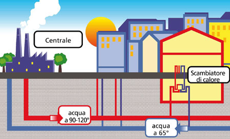

Definizione:
Il teleriscaldamento
è una forma di riscaldamento che consiste essenzialmente nella distribuzione,
attraverso una rete di tubazioni isolate e interrate, di acqua calda, acqua
surriscaldata o vapore (detti fluidi termovettori), proveniente da una grossa
centrale di produzione, alle abitazioni con successivo ritorno dei suddetti
alla stessa centrale.

Produzzione
Il calore è solitamente prodotto in una centrale di cogenerazione a combustibili
fossili o biomasse, oppure utilizzando il calore proveniente dalla termovalorizzazione
dei rifiuti solidi urbani.
In alcuni Paesi (Russia, Ucraina, Svezia, Svizzera ecc.) si utilizza anche la
cogenerazione da centrale nucleare.
Oltre alle biomasse, le altre fonti di energia rinnovabile utilizzate per il
teleriscaldamento sono la geotermia (in Italia a Ferrara) e il solare termico
(Solar District Heating). Un'altra fonte di energia "a costo zero" è l'uso di calore
di scarto da processi industriali.
Nelle centrali di cogenerazione a combustibili fossili o biomasse, generalmente,
l'impianto di cogenerazione è dimensionato per produrre metà della potenza massima di
picco e, in assenza di guasti, durante l'anno produce circa il 90% del calore totale prodotto.
Ad essa è affiancata una centrale termica di supporto, in grado di coprire da sola l'intero
carico di picco, che interviene quando la centrale di cogenerazione è guasta o non riesce a
coprire da sola la domanda. In questo modo, si riesce a raggiungere elevate efficienze di
sfruttamento dell'energia primaria, fino all'80%.